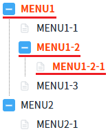
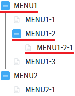

TreeView의 'deselectNode' 메소드를 사용하여 모든 노드의 선택을 해제하는 예제입니다.
모든 노드의 선택 해제하기
1
STEP 1: 초기 상태를 확인합니다.
TreeView가 구성되어 있고 3개의 노드가 선택되어 있습니다. (TreeView의 선택된 노드를 강조하기 위해 선택된 노드의 글자색을 붉은색으로 적용하였습니다.)
Image 1.브라우저(Chrome) 실행 예시

2
STEP 2: 모든 노드의 선택 해제하기
'모든 노드의 선택 해제하기' 버튼을 클릭합니다.3
STEP 3: 실행된 결과를 확인합니다.
모든 노드가 선택 해제됩니다.
Image 2.브라우저(Chrome) 실행 예시

TreeView의 'deselectNode' 메소드를 사용하여 스크립트를 작성합니다.
Example 1.Script
// TreeView 'trv_exam1'의 선택된 노드를 해제합니다.
trv_exam1.deselectNode();deselectNode( )